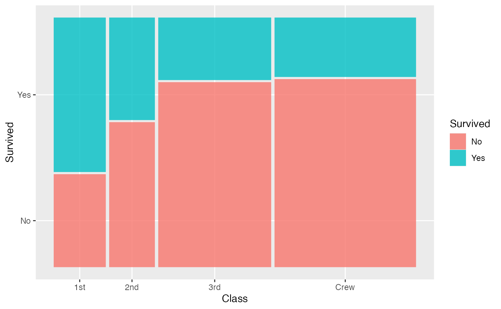
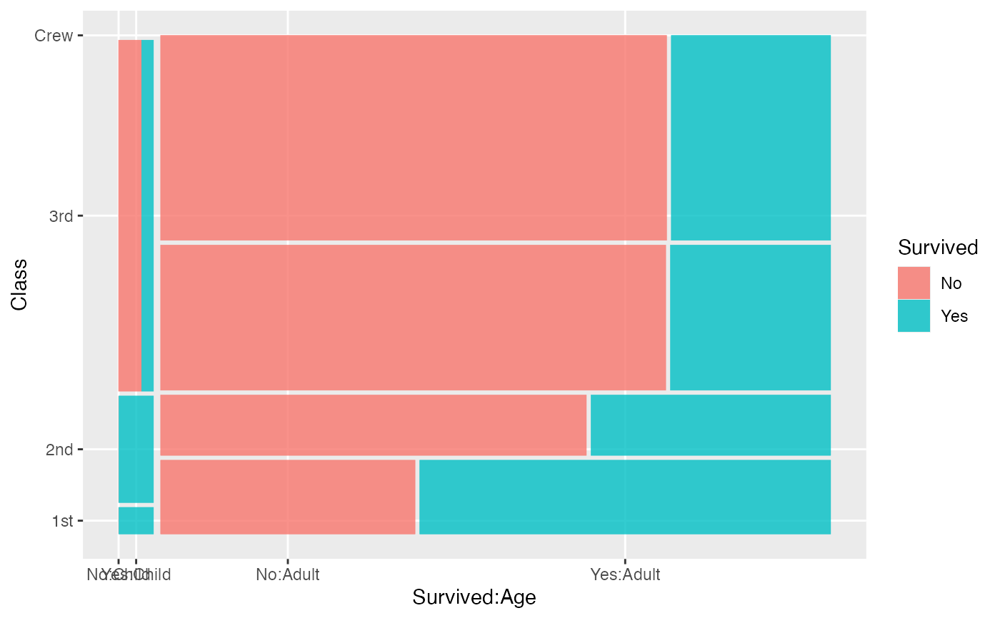
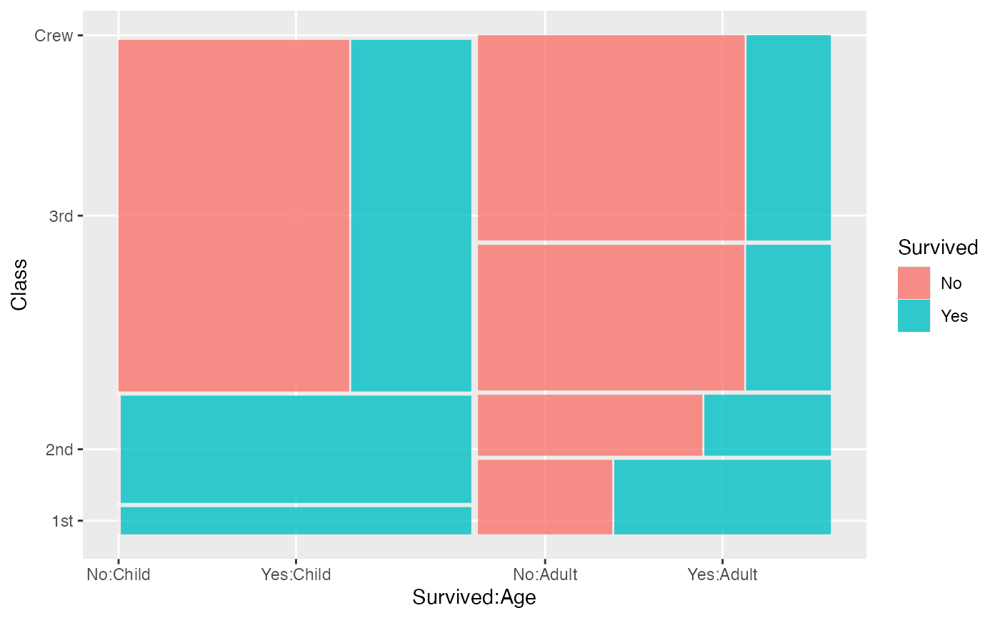

A mosaic plot is a convenient graphical summary of the conditional distributions in a contingency table and is composed of spines in alternating directions.
geom_mosaic(mapping = NULL, data = NULL, stat = "mosaic", position = "identity", na.rm = FALSE, divider = mosaic(), offset = 0.01, show.legend = NA, inherit.aes = FALSE, ...) stat_mosaic(mapping = NULL, data = NULL, geom = "mosaic", position = "identity", na.rm = FALSE, divider = mosaic(), show.legend = NA, inherit.aes = TRUE, offset = 0.01, ...)
Arguments
| mapping | Set of aesthetic mappings created by |
|---|---|
| data | The data to be displayed in this layer. There are three options: If A A |
| stat | The statistical transformation to use on the data for this layer, as a string. |
| position | Position adjustment, either as a string, or the result of a call to a position adjustment function. |
| na.rm | If |
| divider | Divider function. The default divider function is mosaic() which will use spines in alternating directions. The four options for partitioning:
|
| offset | Set the space between the first spine |
| show.legend | logical. Should this layer be included in the legends?
|
| inherit.aes | If |
| ... | other arguments passed on to |
| geom | The geometric object to use display the data |
Computed variables
- xmin
location of bottom left corner
- xmax
location of bottom right corner
- ymin
location of top left corner
- ymax
location of top right corner
Examples
data(Titanic) titanic <- as.data.frame(Titanic) titanic$Survived <- factor(titanic$Survived, levels=c("Yes", "No")) ggplot(data=titanic) + geom_mosaic(aes(weight=Freq, x=product(Class), fill=Survived))# good practice: use the 'dependent' variable (or most important variable) # as fill variable ggplot(data=titanic) + geom_mosaic(aes(weight=Freq, x=product(Class, Age), fill=Survived))ggplot(data=titanic) + geom_mosaic(aes(weight=Freq, x=product(Class), conds=product(Age), fill=Survived))# Just excluded for timing. Examples are included in testing to make sure they work# NOT RUN { data(happy, package="productplots") ggplot(data = happy) + geom_mosaic(aes(x=product(happy)), divider="hbar") ggplot(data = happy) + geom_mosaic(aes(x=product(happy))) + coord_flip() # weighting is important ggplot(data = happy) + geom_mosaic(aes(weight=wtssall, x=product(happy))) ggplot(data = happy) + geom_mosaic(aes(weight=wtssall, x=product(health), fill=happy)) + theme(axis.text.x=element_text(angle=35)) ggplot(data = happy) + geom_mosaic(aes(weight=wtssall, x=product(health), fill=happy), na.rm=TRUE) ggplot(data = happy) + geom_mosaic(aes(weight=wtssall, x=product(health, sex, degree), fill=happy), na.rm=TRUE) # here is where a bit more control over the spacing of the bars is helpful: # set labels manually: ggplot(data = happy) + geom_mosaic(aes(weight=wtssall, x=product(age), fill=happy), na.rm=TRUE, offset=0) + scale_x_productlist("Age", labels=c(17+1:72)) # thin out labels manually: labels <- c(17+1:72) labels[labels %% 5 != 0] <- "" ggplot(data = happy) + geom_mosaic(aes(weight=wtssall, x=product(age), fill=happy), na.rm=TRUE, offset=0) + scale_x_productlist("Age", labels=labels) ggplot(data = happy) + geom_mosaic(aes(weight=wtssall, x=product(age), fill=happy, conds = product(sex)), divider=mosaic("v"), na.rm=TRUE, offset=0.001) + scale_x_productlist("Age", labels=labels) # facetting works!!!! ggplot(data = happy) + geom_mosaic(aes(weight=wtssall, x=product(age), fill=happy), na.rm=TRUE, offset = 0) + facet_grid(sex~.) + scale_x_productlist("Age", labels=labels) ggplot(data = happy) + geom_mosaic(aes(weight = wtssall, x = product(happy, finrela, health)), divider=mosaic("h")) ggplot(data = happy) + geom_mosaic(aes(weight = wtssall, x = product(happy, finrela, health)), offset=.005) # Spine example ggplot(data = happy) + geom_mosaic(aes(weight = wtssall, x = product(health), fill = health)) + facet_grid(happy~.) # }# end of don't run